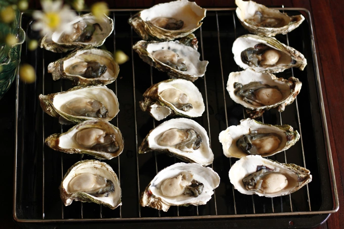
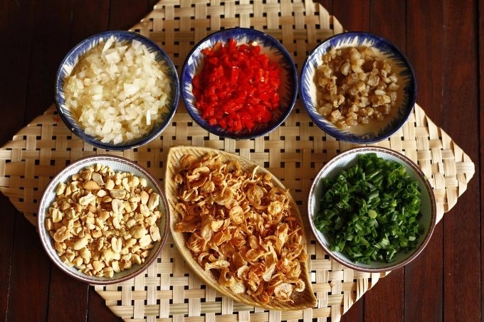
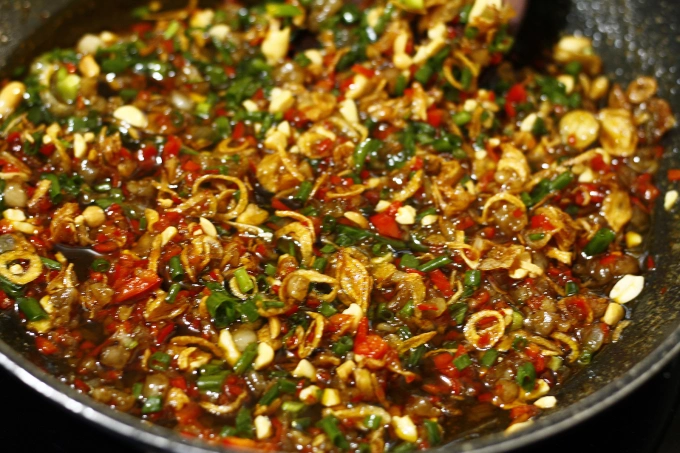
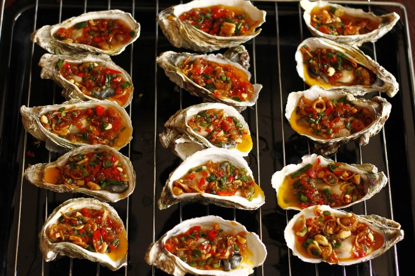
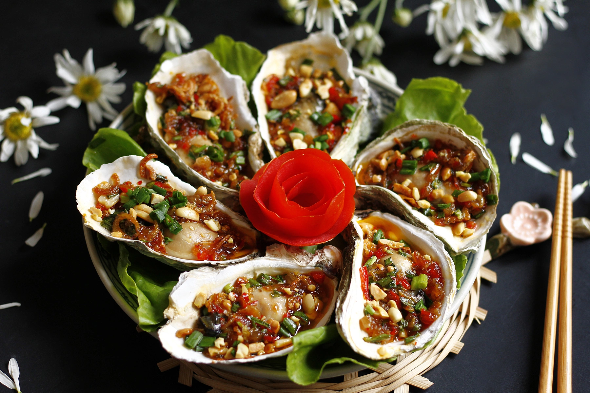

Trở về trang chủ
Công thức hàu nướng mỡ hành
Công thức của web VN Express
Nguyên liệu
- 2 kg hàu sữa tươi
- 100 gr mỡ phần (tăng độ béo)
- 1 bó hành lá
- 1 củ hành tây
- 2 quả ớt sừng
- Dầu hào, mắm, đường, tương ớt, hạt nêm, hạt tiêu, ớt
- Dầu màu điều, dầu ăn
- Lạc rang giã dập
- Hành khô phi vàng
Hướng dẫn
-
Hàu dùng bàn chải cọ chà, rửa nhiều lần cho sạch. Dùng dao nhọn tách
đôi vỏ. Chọn phần vỏ trũng sâu để đựng ruột hàu. Lần lượt xếp lên vỉ
nướng Mỡ phần thái hạt lựu rồi chiên vừa tầm hơi vàng, vớt ra cho ráo
dầu. Hành khô phi vàng. Ớt sừng bỏ hạt, thái nhỏ. Hành tây thái nhỏ.
Hành lá rửa sạch, thái nhỏ. Lạc rang giã dập.


-
Cho nhiều dầu chút vào chảo đun nóng, cho hành tây vào xào thơm. Trút
phần tóp mỡ vào. Nêm nếm gia vị gồm 1,5 thìa canh dầu hào, 1 thìa canh
đường, 1 thìa canh tương ớt, 1 thìa canh dầu màu điều, 1 thìa cà phê
hạt nêm, 1/2 thìa cà phê hạt tiêu đảo đều, nêm nếm cho vừa miệng rồi
đun cho tới khi hơi sền sệt là được, tắt bếp. Khi hỗn hợp sốt hơi
nguội mới cho hành lá cắt nhỏ, ớt cắt nhỏ và 1/3 lượng lạc rang giã
dập vào đảo đều là được hỗn hợp sốt mỡ hành.


-
Múc sốt mỡ hành rưới đều và ngập lên trên từng con hàu.Nướng hàu bằng
than hoa, lò nướng hoặc nồi chiên không dầu đều ngon. Đặt nhiệt độ
khoảng 200-220 độ trong 6 - 7 phút là được. Lấy khay ra, rắc thêm lạc
rang giã dập còn lại, hành phi và thưởng thức nóng.
